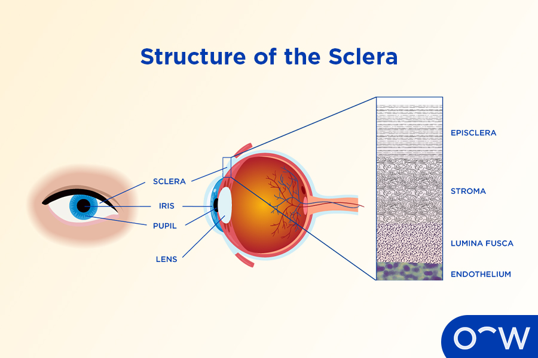
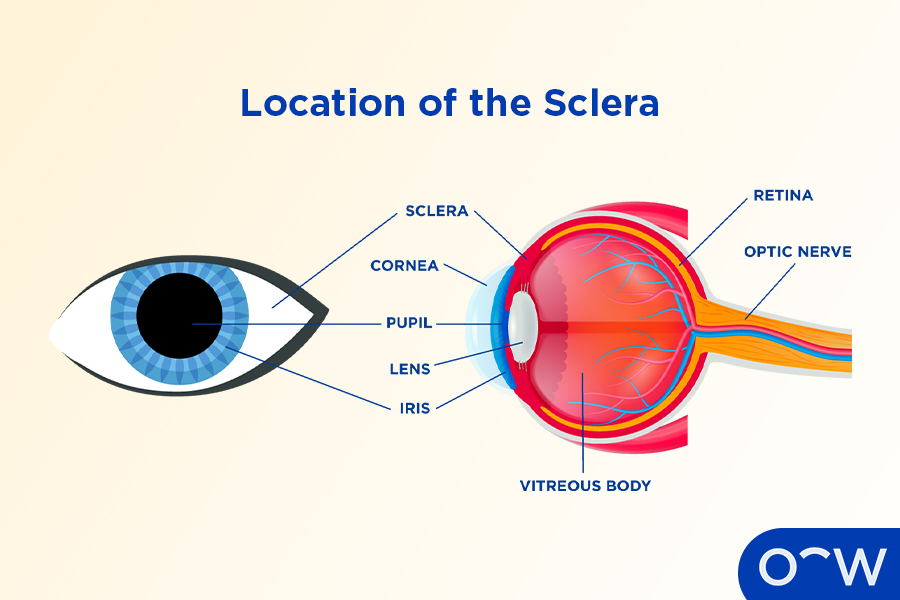
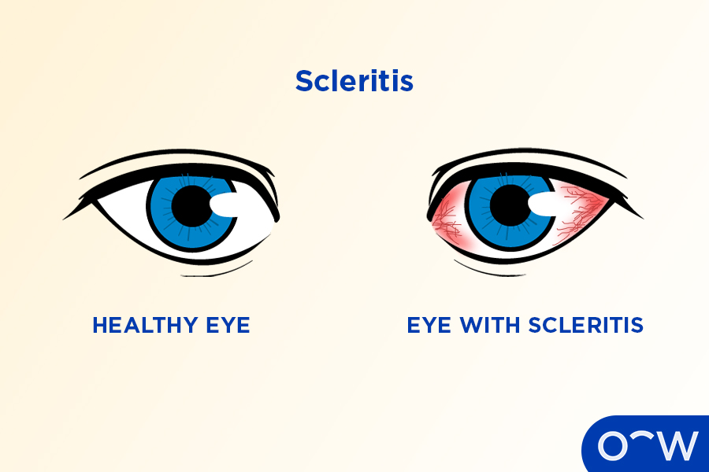

What is the Sclera of the Eye?
{Content}
What is the Other Term for Sclera?
{Content}
What is the Structure of the Sclera?
{Content}

What is the Sclera Made of?
{Content}
What are the Layers of Sclera?
{Content}
- Episclera: The episclera is the first, outermost layer of the sclera made of clear, thin tissue. The episclera is connected to the Tenon capsule.
Where is the Sclera Located in the Anatomy of the Eye?
{Content}

What is the Function of the Sclera in the Eye?
{Content}
How is the Sclera Connected to the Cornea?
{Content}
How Does the Sclera Help the Human Eye See?
{Content}
Is the Sclera Sensitive to Light?
{Content}
What are the Sclera-Related Eye Problems?
{Content}
- Jaundice: Jaundice is a condition in which a person’s skin, bodily fluids and sclera take on yellow discolouration due to a build-up of bilirubin in the blood, according to HealthDirect.

What are the Different Ways to Take Care of the Sclera?
{Content}
- Wear protective eyewear: Wearing protective eyewear such as safety goggles or glasses can help protect the sclera from damage such as a scratch or an object penetrating the surface of the eye.
What is the Importance of Regular Visits With an Optometrist?
{Content}
How Can Oscar Wylee Help Take Care of Your Eye?
{Content}
Does Using Eye Drops Help the Sclera?
{Content}
What is the Difference Between the Sclera and the Conjunctiva?
{Content}